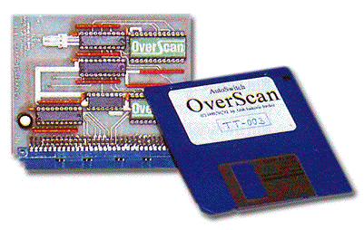

|
|
18.18.1 TT Overscan
Overscan TT Bildschirmerweiterung
Die "Overscan TT" Grafikerweiterung der Firma Overscan
war eine für damalige Zeiten günstige Möglichkeit, die
Grafik seines Atari TT aufzubohren. Die Platine wurde in den VME-Slot
gesteckt. Zusätzlich mußten noch drei weitere Kabel verlegt
werden.
Folgende Auflösungen wurden erreicht:
Der Overscan TT kostete Mitte 1992 ca. 299,- DM
 Abbildung 1 - Overscan TT Hardware und Treiberdiskette
Beachten sie bitte das die unten genannten Adresse nur noch
nostalischen Wert besitzt. Die Fa. Overscan ist vor mehr als 6 Jahren
kommentar- und spurlos von der Bildfläche verschwunden.
Bezugsadresse:
|
|
|